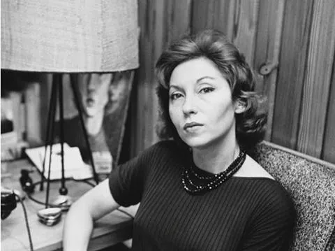

JORNAL DO CETI
*UMA DAS MAIORES ESCRITORASS DA LITERATURA BRASILEIRA*
CLARICE LISPECTOR:
A VOZ MAIS
PROFUNDA DA ALMA BRASILEIRA
A Clarice Lispector é considerada uma das maiores escritoras da literatura brasileira e mundial. Nascida na Ucrânia e naturalizada brasileira, ela trouxe uma forma inovadora de escrever, focando nos sentimentos, pensamentos e conflitos internos das personagens. Sua obra rompeu com o estilo tradicional de narrativa, valorizando mais o fluxo de consciência e a reflexão psicológica.
DESTAQUE PRINCIPAL
CLARICE TRANSFORMA A LITERARURA BRASILEIRA
Entre suas obras mais conhecidas estão A Hora da Estrela, Perto do Coração Selvagem e Laços de Família. Esses livros mostram sua habilidade de explorar o cotidiano de forma profunda e filosófica.
CURIOSIDADES
- _Viveu no Recife durante a infância
- _Trabalhou como jornalista
- _É considerada uma das maiores autoras da literatura moderna brasileira
- _Sua obra é lida no mundo inteiro

ESTILO E IMPACTO
O impacto de Clarice Lispector na literatura brasileira é enorme. Ela influenciou gerações de escritores ao mostrar que a literatura pode ir além da narrativa comum, explorando o interior humano. Sua obra abriu espaço para uma escrita mais subjetiva, intimista e experimental, tornando-a um símbolo de inovação e profundidade na literatura.
LEGADO
Com 18 livros, 85 contos, além de crônicas, cartas e artigos, ela explorou os mistérios da alma humana com uma profundidade rara, criando obras que desafiam definições e permanecem atuais.